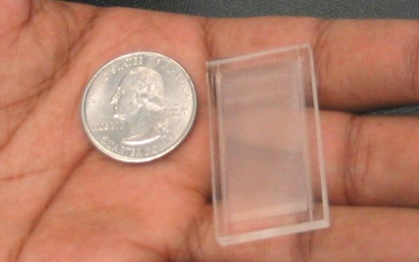
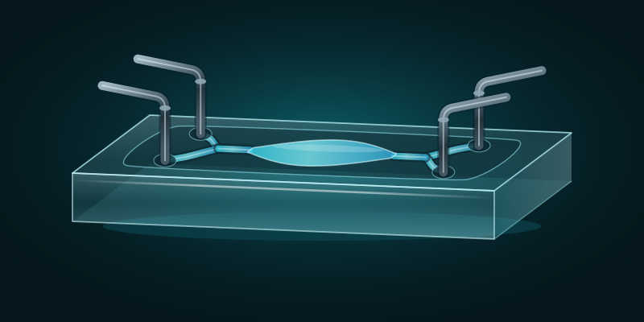
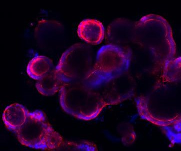
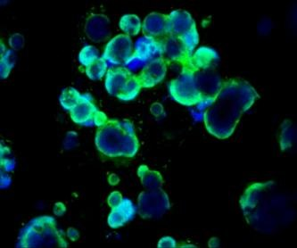
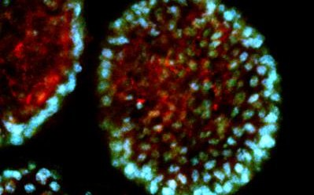
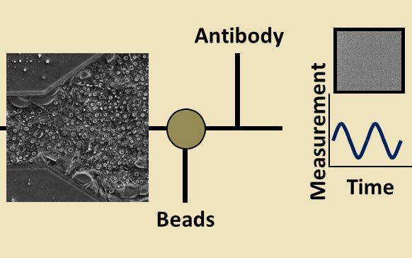
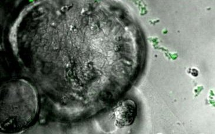
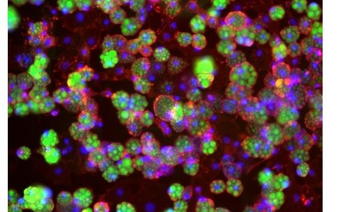
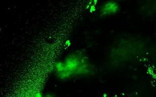
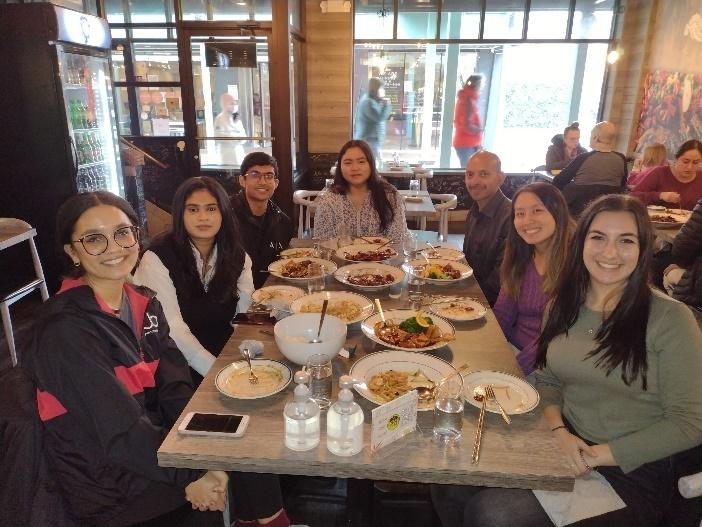

Engineer
Microfluidic and organ-on-chip platforms that set the conditions living tissue experiences.
Our microfluidic platforms, organ-on-chip models and sensors let us control, perturb and measure living biology with high spatial and temporal resolution.



We build reusable engineering platforms and apply them to questions where spatial control and measurement over time matter.

Microfluidic and organ-on-chip platforms that set the conditions living tissue experiences.

Human tissues and organoids, grown alone or with microbes.

Continuous on-chip sensors that track what tissue secretes, such as albumin and cholesterol, over time.

Colon organoids and chips that host living bacteria, to test how bile acids and microbial metabolites change tumor epithelium.
Colon and microbiome projects
Linked adipose and liver tissues on chip for studying insulin resistance and fatty liver disease in human cells.
Liver and adipose projects
Intestine chips and pharmacokinetic models of how gut bacteria alter drug absorption and metabolism.
Drug response projectsAdvanced Therapeutics 7(8): 2300449, 2024
Engineered bacterial therapeutics for detecting and treating CRC
Trends in Cancer 10(7): 588–597, 2024

We welcome PhD, master's and undergraduate researchers who want to work where engineering, biology and computation meet, in a lab built on academic freedom and room to follow your own scientific curiosity.